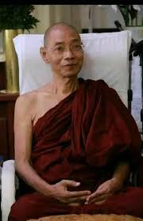

|  | |
| Religion | Buddhism |
|---|---|
| Religion Group | Theravada |
| Gang | Golden gold |
| School building | Great Cemetery |
| Degree |
Abhidham Maharatha Guru (2020) Agama Mahsaddharma Jotikadhaza (2018) Agama Mahapandita (2000) Agama Mahaganthawaskapandita (1996) |
| Education |
PhD (Buddhist studies) ( University of Magadha ) MA (Buddhist studies) ( University of Kelaniya ) T.S.A. Dharmasriya (Pali scholar) |
| Other names | Rector Bishop |
| Divine name | Nanda Mala |
| Born | Tun Tin 22 March 1940 (age 84) Nyaungpin village, Sankou Township Mandalay Region |
| Parents |
U Sanhla (father) Daw Khin (Daw Wan Thagi) (mother) |
1940 On the night of March (22nd) (Myanmar year 1301, full moon day)Mandalay Division , Sankou Township He was born to father U San Hla (U Gun No Daya) and mother Daw Khin (Daw Wan Thaggy) from Nyaung Pin Village .He was the ninth of ten siblings. My younger name is Maung Tun Tin.
Rector Bishop Dr. Nandamala Bhiwantha is a Buddhist monk from Myanmar who is an expert in theology . The Chief Patron of the Mahasubodhana Monastery and the Rector of the Sitagu World Buddhist University . He is also the chairman of the University of Science and Geography.The recipient of the titles of Abhidhama Maharatha Guru and Agama Mahapandita Since 2018, the monk has been the president (associate owner ) of Shwe Jinnikaya, the second largest Sangha sect in Myanmar. He is carrying the responsibility of the great patron.
Born in a village in the upper part of Burma, when he was ten years old, he arrived at Sagaing Mountain Vipassanachoi, belonging to the Ninth Shwejin Mission, Sanking Monastery. At the age of 13, he passed the three-stage Bhidhamma exam. He successfully passed the government dharma exam at the age of 16. He also passed all three stages of the Thak Thiha Novice class with the first rank and received the Novice Diploma. Bhikkhu (4) According to the law, the Pagoda and Dhammasriya examination and (6) According to the Wa (8) According to Wa, he also completed and passed the government's Dharmasriya exam. p. He is also the Lord of Dharma. He received a master's degree from Sri Lanka and a doctorate from India . From 2005 to 2019, he served as the second rector of the International Theravada Buddhist Missionary University .In 2020, he laid the foundation for the establishment of the University of Geology and since 2022, he has also served as the chairman of the university.
Since the 1970s, Komala, He wrote religious articles under pseudonyms such as Kotula (Sakai). Sanking Bishop, Shwe Hintha Bishop He wrote and compiled the biographies of Thamidthodaya Master Daw Mallari. Skilled in composing mantras, he is notable for one hundred Guruvanna gathas and one hundred Ganukkathana gathas
He has traveled to foreign countries such as Germany many times and taught theological courses. In Myanmar, theological training schools have been established and opened, and religious literature is being taught.
| Prestige | Rector ( Sitagu World Buddhist University and International Theravada Buddhist Missionary University ) Chairman (Educational Geography University) |
|---|---|
| Period of responsibility | 1995–present (Sitagu) 2005–2019 (Theravada University) 2022 – Lakshi (Educational Geography) |
| The former | Starting position (Sitagu) Lord Thilananda Bhiwantha (Theravada University) Starting position (geography) |
| Successor | Still serving (Sitagu) Lord Sekinda (Theravada University) Still serving (Geography) |